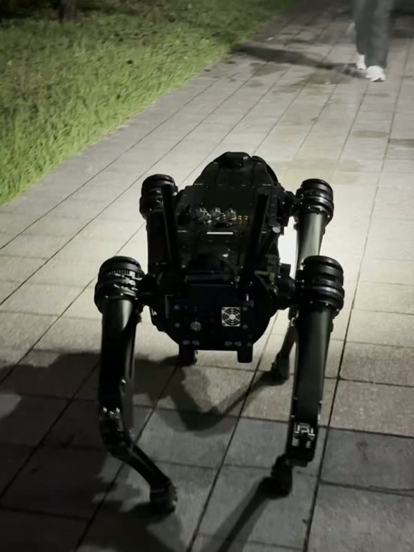
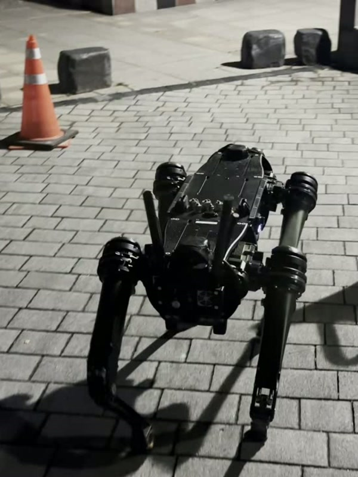

From Instruction to Motion: Real-Time Language-Grounded Navigation on a Quadruped Robot
Under review, 2026
paper soon
Integrated M.S./Ph.D. at KAIST AI, DAVIAN Lab, advised by Prof. Jaegul Choo.
I'm a Ph.D. student at Kim Jaechul Graduate School of AI, KAIST, advised by Professor Jaegul Choo. My research interest lies in spatial reasoning for action policies, so that robots and agents can read a scene and act on it.
Next page →
A portrait, then the quadruped I run experiments with.
1 / 3

Portrait, 2026.

Vision60 on a campus path at night.

Stone plaza run.
Under review, 2026


European Conference on Computer Vision (ECCV), 2026


International Conference on Computer Vision Theory and Applications (VISAPP), 2025 · Oral

Samsung Electronics Research collaboration · Lead researcher

KIST 인공지능연구단 Korea Institute of Science and Technology · Student researcher
KAIST AI Undergraduate research intern · Prof. Jaegul Choo

Republic of Korea Air Force Mandatory military service
KAIST, Kim Jaechul Graduate School of AI Ph.D. student · Advisor: Prof. Jaegul Choo · GPA 4.1 / 4.3

Korea University B.S. in Business Administration and Computer Science · GPA 4.29 / 4.5